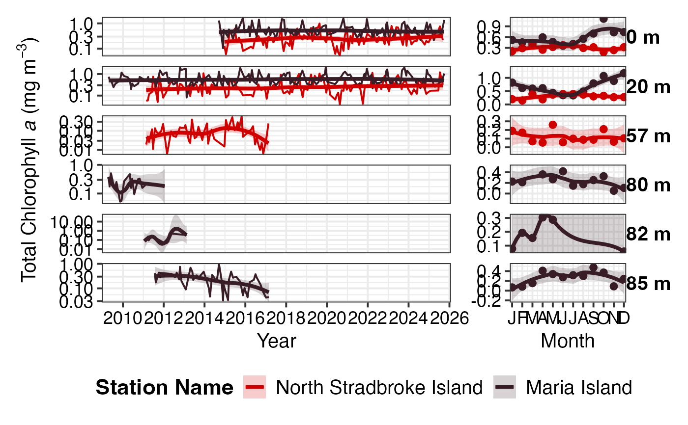
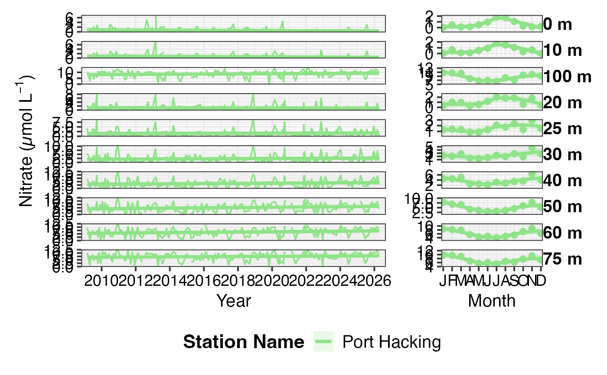
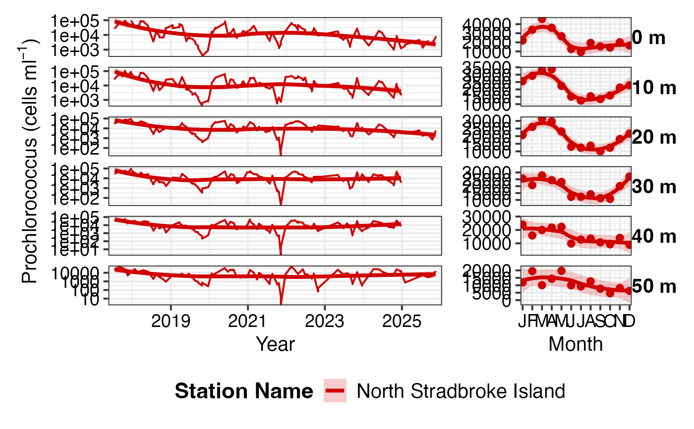
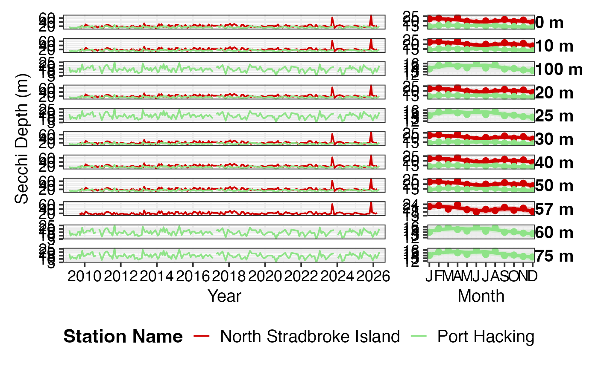

Create a two-panel figure showing environmental variables (nutrients, pigments, picophytoplankton) as both time series and climatology plots, with separate lines for different sampling depths. This is useful for visualising vertical structure and temporal patterns in water column properties.
Arguments
- dat
A dataframe from
pr_get_NRSChemistry(),pr_get_NRSPigments(), orpr_get_NRSPico()containing environmental data with depth information- Trend
Type of trend line to add:
"None"- No trend line"Smoother"- LOESS smooth (default, good for non-linear patterns)"Linear"- Linear regression line
- trans
Transformation for the y-axis scale:
"identity"- No transformation (default)"log10"- Log base 10 transformation (useful for pigments, nutrients)"sqrt"- Square root transformationAny other transformation accepted by
ggplot2::scale_y_continuous()
Details
This function creates a two-panel figure:
Panel 1: Time Series (left, wider)
Shows the full time series with different colours/line types for each depth. Useful for identifying:
Long-term trends at different depths
Episodic events (e.g., upwelling, mixing)
Vertical stratification patterns
Deep chlorophyll maximum dynamics
Panel 2: Monthly Climatology (right, narrower)
Shows the mean seasonal cycle at each depth. Useful for identifying:
Typical seasonal patterns (e.g., spring bloom, summer stratification)
Depth of maximum values by season
Seasonal vertical migration of features
The function automatically rounds depth values and creates appropriate legends.
Use pr_remove_outliers() before plotting if extreme values are present.
See also
pr_get_NRSChemistry() for nutrient data,
pr_get_NRSPigments() for pigment data,
pr_get_NRSPico() for picophytoplankton data,
pr_plot_NRSEnvContour() for contour plot visualisation
Examples
# Plot total chlorophyll a with depth
dat <- pr_get_NRSPigments(Format = "binned") %>%
pr_remove_outliers(2) %>%
dplyr::filter(Parameters == "TotalChla",
StationCode %in% c("NSI", "MAI"))
#> Warning: `pr_get_NRSPigments()` was deprecated in planktonr 0.7.0.
#> ℹ Please use `pr_get_data()` instead.
pr_plot_Enviro(dat, Trend = "Smoother", trans = "log10")

# Plot nitrate concentrations
dat <- pr_get_NRSChemistry() %>%
dplyr::filter(Parameters == "Nitrate_umolL",
StationCode == "PHB")
#> Warning: `pr_get_NRSChemistry()` was deprecated in planktonr 0.7.0.
#> ℹ Please use `pr_get_data()` instead.
pr_plot_Enviro(dat, Trend = "Linear", trans = "identity")
#> Warning: Removed 42 rows containing non-finite outside the scale range
#> (`stat_smooth()`).
#> Warning: Removed 10 rows containing missing values or values outside the scale range
#> (`geom_line()`).

# Plot Prochlorococcus abundance
dat <- pr_get_NRSPico() %>%
dplyr::filter(Parameters == "Prochlorococcus_cellsmL",
StationCode == "NSI")
#> Warning: `pr_get_NRSPico()` was deprecated in planktonr 0.7.0.
#> ℹ Please use `pr_get_data()` instead.
pr_plot_Enviro(dat, Trend = "Smoother", trans = "log10")
#> Warning: Removed 1 row containing non-finite outside the scale range (`stat_smooth()`).

dat <- pr_get_NRSChemistry() %>% dplyr::filter(Parameters == "SecchiDepth_m",
StationCode %in% c('PHB', 'NSI'))
pr_plot_Enviro(dat)
